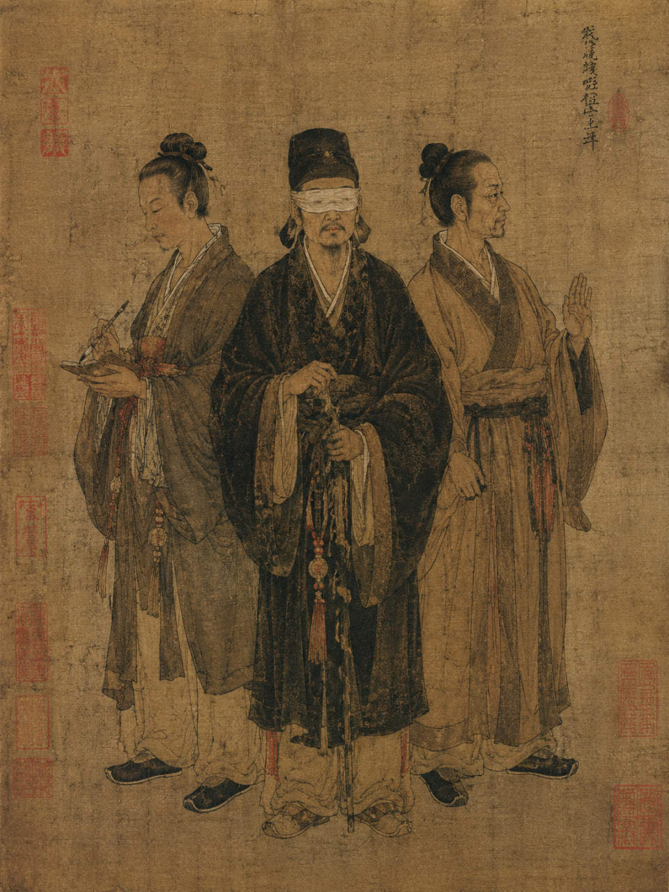

Дело о бумажном вороне

В старых судебных школах Империи говорили, что расследование всегда состоит из трех частей: цзянь, сы и дуань — «увидеть», «осмыслить» и «рассечь». Даже слепой следователь обязан пройти все три ступени, иначе он останется не судьей, а всего лишь слушателем чужого горя.
Я вспомнил эти слова весной восемнадцатого года правления Сына Неба, когда служил судебным чиновником в округе Юншуй. В те времена уже никто не спорил с Великим Разделением, случившимся при древних императорах. Люди рождались либо слепыми, но способными слышать и говорить, либо глухими, но сохранявшими зрение и речь, либо немыми, которым были дарованы слух и зрение. Мудрецы утверждали, что так Небо избавило мир от великой смуты, потому что человек, обладающий всеми тремя дарами сразу, неизбежно начинает желать власти над остальными. Верно это было или нет, я не знал. Но за сорок лет жизни мне ни разу не доводилось встретить целостного человека.
В тот день городской староста сообщил о смерти жены торговца благовониями по имени Шэнь. Соседи слышали ночью ссору, затем звук упавшей мебели, а утром женщину нашли мертвой во внутреннем дворе собственного дома. Торговца уже связали и ожидали лишь формального решения суда. Однако старый магистрат велел заняться делом мне.
Со мной прибыли мои обычные спутники: немой писец Цзянь и глухой страж Ло. За многие годы службы мы научились понимать друг друга почти без слов. Цзянь носил при себе узкие дощечки для записей и маленькую кисть в бамбуковом футляре. Ло же говорил мало даже для слышащего человека, но замечал движение быстрее, чем иные люди успевают подумать.
Дом торговца стоял возле канала. Даже прежде чем войти внутрь, я почувствовал запах сырости, масла для ламп и дешевого сандала. Во дворе было тихо, если не считать капель воды, падавших с бамбукового желоба.
Сначала следовало исполнить цзянь — наблюдение. Поскольку глаза были закрыты для меня с рождения, я наблюдал иначе. Ло подвел меня к телу. Женщина лежала на спине. Шея была сломана. На правой ладони ощущался небольшой ожог. Не свежий, но полученный незадолго до смерти.
Затем я попросил описать двор. Ло говорил коротко: опрокинутый табурет, разбросанная бумага, жаровня с углями, клетки с певчими птицами под навесом. Последнее показалось мне странным.
— Птицы пели ночью? — спросил я.
Староста ответил:
— Нет, господин. Соседи слышали только ссору супругов.
Мы вошли в дом. Там уже ожидал торговец. Он поклонился спокойно. Слишком спокойно для человека, потерявшего жену.
Я расспросил его о ссоре.
— Мы действительно спорили вечером, — ответил он. — Но потом помирились. Я уснул раньше нее.
— Соседи слышали шум уже глубокой ночью.
— Наверное, упал табурет.
— А ваша жена?
— Возможно, вышла во двор и поскользнулась.
Пока он говорил, я слушал дыхание. Многие лгут словами, но тело редко умеет лгать полностью. Однако дыхание торговца оставалось ровным. Не испуганным, не подавленным, а подготовленным.
Когда допрос закончился, Цзянь внезапно коснулся моего рукава и вложил мне в ладонь маленький предмет. Это был бумажный ворон. Одно крыло оказалось слегка обожжено.
Тогда началось сы — осмысление.
Вечером мы остались в доме одни. Я снова сел посреди двора и велел никому не двигаться. Ночью любой дом разговаривает сам с собой. Дерево трещит от холода, вода стекает по желобам, угли шепчут в жаровне. И среди этих звуков я услышал другое — очень слабое дрожание бумаги, будто кто-то тихо перебирал свитки.
Я попросил Ло провести меня к жаровне. Над ней висела тонкая нить. На нити были закреплены бумажные фигурки птиц. Горячий воздух поднимался от углей, фигурки начинали двигаться и хлопать крыльями. Шорох действительно напоминал ссору двух людей за тонкой стеной.
Тогда я понял замысел. Много месяцев подряд торговец каждую ночь запускал бумажных птиц над жаровней. Соседи привыкли слышать ночной шум и перестали обращать на него внимание. В ночь убийства никто уже не различал, где обычная семейная перебранка, а где настоящая беда.
Но оставался вопрос: почему жена получила ожог?
Ответ дал Цзянь. Он быстро вывел кистью на дощечке: «Она пыталась схватить горящую птицу».
Тогда картина сложилась полностью. Женщина обнаружила устройство и поняла, что муж обманывает соседей. Между ними началась ссора. Во время борьбы одна из бумажных птиц упала в жаровню. Женщина попыталась отбросить ее рукой и получила ожог. После этого торговец столкнул ее во двор.
На следующий день настало дуань — решение.
В судебном зале я велел развязать обвиняемого. Люди зашептались. Тогда я попросил слуг разжечь переносную жаровню и подвесить над ней бумажного ворона. Через несколько мгновений фигурка начала хлопать крыльями. По залу прошел тревожный ропот.
— Много месяцев подряд этот человек учил соседей не слышать настоящий человеческий страх, — сказал я.
Торговец молчал.
— Вы не ожидали лишь одного. Что немой человек узнает запах обожженной бумаги быстрее любого из нас.
После этих слов дыхание обвиняемого впервые сбилось. Он опустился на колени и признал вину.
По законам Империи убийство супруги каралось медленной смертью. Магистрат подписал приговор в тот же день.
А вечером, возвращаясь домой вдоль канала, я долго размышлял о странной воле Неба. Великие мудрецы учили, что Разделение делает людей зависимыми друг от друга и потому сохраняет гармонию Поднебесной. Но в тот день убийцу погубил не закон и не моя мудрость. Его погубило то, что немой человек лучше говорящих понимал природу бумаги и огня.
И тогда я впервые подумал: возможно, Небо разделило людей не потому, что каждый из нас несовершенен. Возможно, оно просто спрятало истину о мире по разным человеческим телам.